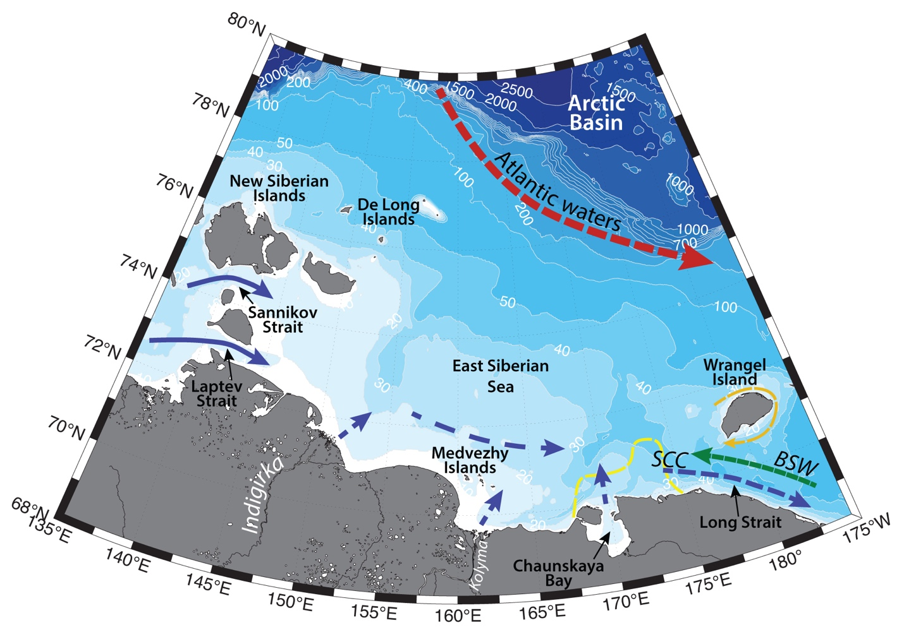

Schematic water circulation patterns and geographical place names in the East Siberian Sea region. Adopted from Anderson et al., 2011. Dashed line marks the studied region.
Hydrography of the Chaunskaya Bay region is determined by the river runoff and advection of riverine waters from the Laptev Sea through Laptev and Sannikov Straits, extensive sea ice cover and formation of the flaw leads, inflow of Pacific-origin waters through the Long Strait, and surface Arctic water from the north. Water structure and variability of the vast and shallow (~ 52 m deep) East Siberian shelf is largely dependent on the atmospheric forcing (e.g. Dmitrenko et al., 2005a; Saveleva et al., 2008).
Siberian Coastal Current (SCC), which is more known from the studies of the Chukchi Sea region (e.g. Weingartner et al., 1999; Anderson et al., 2011; Pisareva et al., 2015a,b), is thought to originate from the river runoff into the Russian seas. It carries fresh and typically cold water (𝑆 < 30; known in the Chukchi Sea as “Siberian Coastal Water”) eastwards along the coast towards Bering Strait. The nature of the current in the Chukchi Sea is thought to be quasi-permanent and dependent on the wind pattern: downwelling favorable westerly winds enhance the SCC and create a sharp hydrographic front, while upwelling favorable easterly winds weaken the current, and the front is less distinct or absent at all (Weingartner et al., 1999).
While little is known about this current in the East Siberian Sea yet, it is logical to assume, that the behavior of the SCC in this region is somewhat similar. Carmack with coauthors (Carmack et al., 2015) suggest that SCC is the Eurasian branch of the Riverine Coastal Domain (RCD) – a narrow (~<15km), shallow (~10m) contiguous feature, extending clockwise along the Arctic shores. RCD is driven by an aggregation of continental runoff. As such, Kolyma and Indigirka rivers runoff (mean annual discharges of 50.6 km3 for period 1936–1998 and 102.7 km3 for period 1978–2000, respectively; Anderson et al., 2011), as well as eastward alongshore spreading of the Ob-Yenisei and Lena plumes (and of many smaller rivers as well; e.g. Semiletov et al., 2005) through the Laptev and Sannikov straits, are likely contributing to this buoyancy-driven boundary current, which is expected to be present in the East Siberian Sea as well. The waters of the RCD carry terrestrial physical and biogeochemical properties affecting marine life in the region. Between RCD and ambient sea forms a continuous gradient of various properties, which position depends on the state and behavior of the river plumes and various physical forcing affecting the dynamics of the coastal waters (Carmack et al., 2015).
Many studies have addressed the redistribution of surface waters due to atmospheric forcing in the Siberian seas (e.g. Shpaikher et al., 1972; Dmitrenko et al., 2005a; Dmitrenko et al., 2008; Saveleva et al., 2008). In general, it is believed, that with high pressure and anticyclonic circulation dominating in the central Arctic there is a northward, and in some cases – westward, propagation of river plumes, and cyclonic circulation causes eastward flow along the coastline.
The westward flow through the Long Strait (e.g. Weingartner et al., 1998; Woodgate et al., 2005b) as well as anticyclonic circulation around Wrangel Island may bring waters of Pacific origin from the east into the East Siberian Sea (e.g. Semiletov et al., 2005), and, possibly, into Chaunskaya Bay. Various modes of Pacific Winter Water (T < ~-1. 6°C, which can also be locally formed via winter cooling of the Bering Summer Water) and Bering Summer Water (T =∼ 0−3°C, S =∼ 32−33) are rich in nutrients and may influence productivity of the region (e.g. Pisareva et al., 2015b).
Atlantic Water (AW, T > 1.26°C, 𝑆 > 33.64 psu), lying ~100-160 m beneath the shelfbreak, are usually brought onto the Arctic shelf via upwelling events, especially in the submarine canyons (e.g. through Herald and Barrow canyons in the Chukchi Sea; Pisareva et al., 2015a,b, 2019). These waters may contribute to ice melting and polynya formation, as well as affect the bottom layer (Dmitrenko et al., 2010). AW also may carry Atlantic species and some nutrients as well. While there is a possibility of AW inflow into the Eastern Siberian sea, both from the Wrangel Island region, or from the north onto the shelf, for now no such events were registered.
Using hydrographic and hydrochemical data from a survey in 2000 Semiletov et al. (2005) have identified two areas on the East Siberian shelf, which hydrography was dominated by waters of different origin: in the western part of the sea strong fresh water flux and PM transport of the coastal eroded material was evident, while the eastern part of the sea was under the influence of Pacific-origin waters. Authors suggest, that based on the historical summertime TS (temperature/salinity) data, the frontal zone between the two areas may shift more than by 10 degrees longitude. Unfortunately, the fate of the mentioned water masses in the East Siberian Sea still lacks investigation.
In general, during wintertime the water column in the East Siberian Seas is mixed and its temperature is close to freezing point, due to cooling and ice formation. During summertime river discharge create fresh surface layer and strong stratification. The temperature raises to several degrees above zero near the surface in ice free areas (Anderson et al., 2011). Due to the shallow depth hydrographic structure and variability of the sea is subject to wind forcing and vertical mixing, wind-induced water level fluctuations are common (about 60-70 cm, but can reach 2.5 m in the Laptev Strait and Kolyma river mouth; Dobrovolskyi and Zalogin, 1982).
Large freshwater content of East Siberian Sea is generated not only by the freshwater discharge, but also by the sea water exchange with the Arctic Ocean. Fresh and cold surface Arctic waters, originating from the ice melting, are advected onto the East Siberian shelf from the north. The sea used to be ice-covered from October – November to June – July, with vast land-fast ice areas and lots of perennial ice advected into the northern part of the sea (Dobrovolskyi and Zalogin, 1982). Flaw leads are common in the near shore area between stationary land fast ice and moving ice fields. However recently, the wintertime ice cover of the East Siberian Sea has largely decreased (Nghiem et al., 2006; Kwok et al., 2009). The remaining ice is largely affected by the wind patterns – moving in the wind direction, except for the land-fast ice (Morris et al., 1999; Holt and Martin, 2001).
Chaunskaya Bay is a shallow bay of 100 km width, 150 km length and 20 m depth. Several rivers inflow into the bay (the largest being Chaun river), freshening the waters and bringing nutrients, that boost productivity. As many other Arctic bays, it is ice-covered during wintertime, semi-enclosed shores contribute to the trapping of ice at the entrance of the bay. In the absence of ice due to shallow depth summertime warming can bring surface waters to rather high temperatures (>5 °C), while bottom waters temperature is still below zero.
Semidjurnal tides are rather small in East Siberian Sea: from 5-7 cm along the coast (to the east from Chaunskaya Bay and to the west from Indigirka mouth) to 20-25 cm in the Indigirka mouth (Dobrovolskyi and Zalogin, 1982).